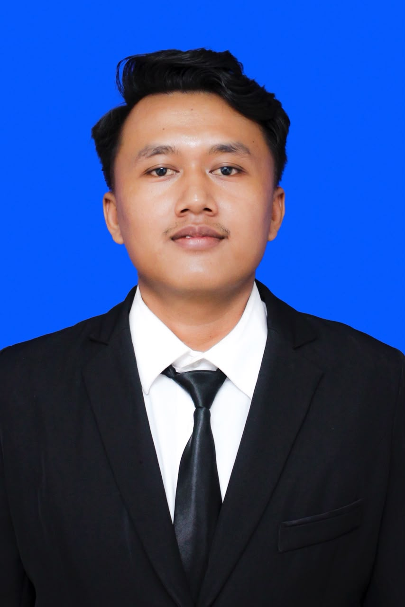
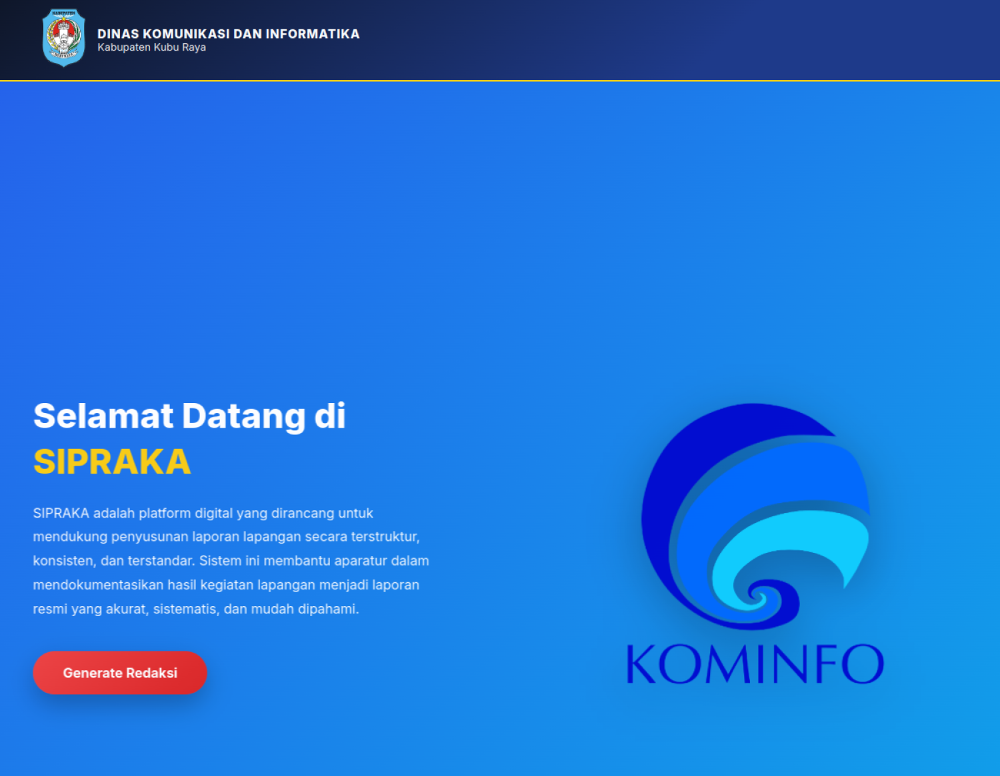
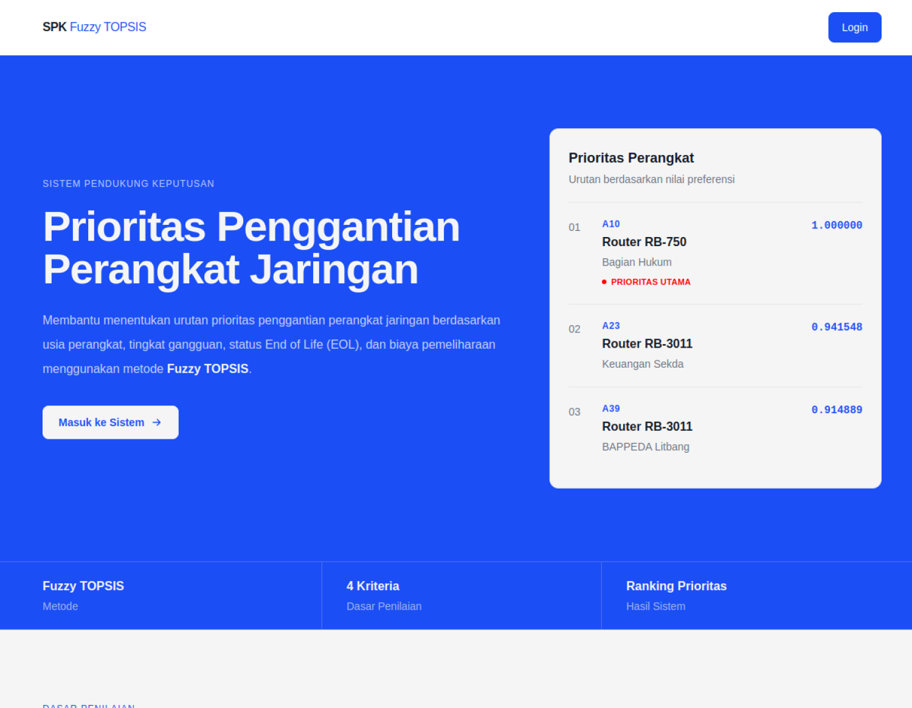

November 2025 — Januari 2026
Web Developer
Diskominfo Kubu Raya · Kubu Raya, Kalimantan Barat
Membangun website untuk menghasilkan laporan kegiatan lapangan.
Halo, selamat datang
Saya menempuh pendidikan Teknik Informatika dan memiliki pengalaman membangun website dashboard dan landing page. Saya tertarik membuat solusi digital yang membantu pekerjaan sehari-hari.

Sedikit tentang saya
Saya menempuh pendidikan Teknik Informatika di Universitas Muhammadiyah Pontianak. Pengalaman saya mencakup pembuatan website dashboard dan landing page.
Saya senang mempelajari teknologi baru dan mencari cara agar solusi yang dibuat mudah digunakan serta sesuai kebutuhan pengguna.
Latar belakang
Pengalaman dan pendidikan yang membentuk cara saya bekerja dan terus berkembang.
November 2025 — Januari 2026
Diskominfo Kubu Raya · Kubu Raya, Kalimantan Barat
Membangun website untuk menghasilkan laporan kegiatan lapangan.
Januari 2023 — Juli 2025
Teduh · Pontianak, Kalimantan Barat
Mengerjakan website dashboard dan landing page untuk klien.
Januari 2019 — April 2022
AZKA MODE · Sekadau, Kalimantan Barat
2022 — 2026
Universitas Muhammadiyah Pontianak · Pontianak
Program Studi Teknik Informatika.
2019 — 2022
SMK Amaliyah Sekadau Hilir · Sekadau
Pendidikan kejuruan Teknik Komputer dan Jaringan.
November 2024
Laboratorium Teknik Informatika · Universitas Muhammadiyah Pontianak
Pelatihan mengembangkan aplikasi Android sederhana.
Juni 2024
PT. Kreasi Putra Hotama
Yang saya kerjakan
Beberapa kemampuan yang saya gunakan untuk menghasilkan pekerjaan yang bermakna.
PHP, HTML, CSS, JavaScript, dan Laravel
Menulis dan menjalankan kode menggunakan Google Colab
Mendesain aplikasi menggunakan Figma
VS Code, NetBeans, XAMPP, Laragon, dan Microsoft Office
Canva dan CapCut
Mudah beradaptasi, mengetik cepat, dan antusias mempelajari hal baru
Pilihan karya
Beberapa proyek yang pernah saya kerjakan. Buka tautan untuk melihat hasilnya.

Website · Diskominfo Kubu Raya
Saya membangun website untuk membantu petugas menyusun laporan kegiatan lapangan.
Lihat proyek ↗
Website
Website Belidak yang saya kerjakan sebagai bagian dari pengalaman pengembangan web.
Lihat proyek ↗
Sistem Pendukung Keputusan
Aplikasi sistem pendukung keputusan yang menerapkan metode Fuzzy TOPSIS.
Lihat proyek ↗Mari terhubung
Saya terbuka untuk berdiskusi, berkolaborasi, atau mendengar peluang baru. Silakan sapa saya melalui kanal berikut.